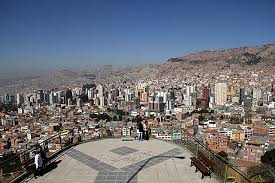
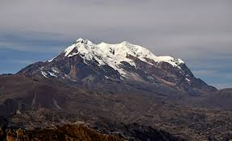

Joyas Naturales y Miradores
Rodeada por la Cordillera Real, La Paz ofrece paisajes únicos producto de la altitud y la erosión. La ciudad misma es un mirador natural que combina urbanismo y geografía espectacular.

Valle de la Luna: El Paisaje Surrealista
Ubicado en la zona sur, es un área donde la erosión ha creado un laberinto de formaciones rocosas arcillosas que asemejan la superficie lunar. Ideal para una caminata fácil y una inmersión geológica. Es un testimonio de la acción del viento y la lluvia en la geografía paceña.

Mi Teleférico: Vistas Panorámicas
Aunque es un sistema de transporte, ofrece el recorrido turístico más impresionante. Sus diferentes líneas conectan La Paz y El Alto, brindando vistas aéreas sin igual del Illimani y la topografía en forma de cuenca de la ciudad. Es el mirador más extenso y moderno.

Mirador Killi Killi: El Corazón de la Vista
Este mirador histórico proporciona una de las mejores vistas de 360 grados de La Paz. Desde aquí se entiende perfectamente la depresión geográfica donde se asienta la ciudad y se aprecian tanto los edificios modernos como las casonas antiguas.

El Illimani: Guardián de La Paz
Aunque no está dentro de la ciudad, esta montaña nevada de 6.462 metros es el símbolo icónico y natural de La Paz. Domina el horizonte desde casi cualquier punto y forma parte esencial de la identidad geográfica y cultural de la región.